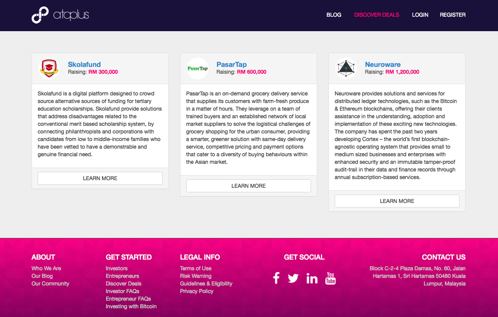
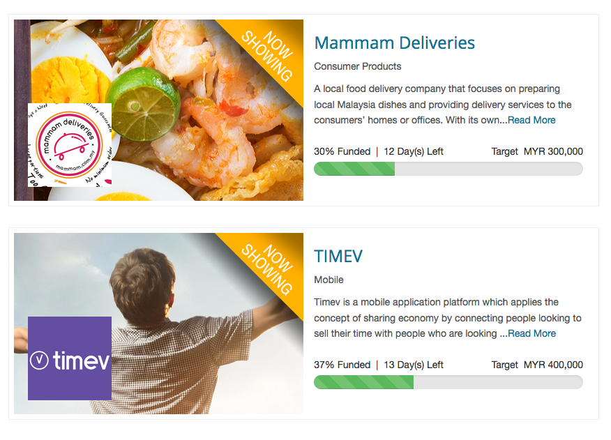
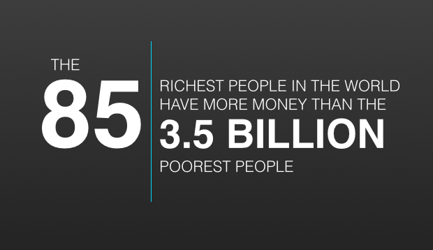

November 21st - 2016
Did you know?
Malaysia was the first ASEAN country to regulate the ECF process in 2015?
Despite this, few actually know how Equity Crowdfunding works, even if they knew what the acronym stands for. Fewer still know why it is such a crucial foundation towards building a flourishing fintech future.
First and foremost, let’s talk about the purpose of ECF. It allows any person with a bank account to access new and exciting investment opportunities traditionally reserved for the privileged few. In addition, it allows people to directly support and contribute to important social causes or products and services that provide personal or emotional connections.
Peter Thiel was one of the first investors in Facebook. His initial US$500,000 returned him just over one billion dollars within 8 years at an average return of 160% per annum - but back then in 2004, only the privileged Venture Capitalists of Silicon Valley had access to deal-flows such as this. Equity crowdfunding allows 500 ordinary people to each invest US$1,000 in similarly early deals and collectively share the rewards once available to only those that could afford to invest the full US$500,000 themselves. Had those 500 people each invested US$1,000 in Facebook they would have each earned US$2,000,000 within 8 years.
Yes, two million dollars for just a one thousand dollar investment - so then what’s the catch? Like any investment offering returns that beat the rate of inflation, there’s an inherent risk with ever increasing promises of rewards - and one should never invest more than they can afford to lose. The point here is not about redefining investment strategies, but improving them. Every sane investor on the planet will tell you that a diversified portfolio is the key to success - and equity crowdfunding simply provides an additional avenue for decreasing the overall risk of existing investment portfolios that rely upon institutional assets such as equity funds.
Getting back to FinTech - the single most valuable component to the upcoming boom within each nation, region, and or industry is the introduction of secondary-markets. These new markets are often formed by the companies raising funds through ECF platforms - which are defined by those that support these alternative investment opportunities.
In Malaysia, there are currently six licensed ECF operators that are regulated by the Securities Commission. These platforms allow retail investors from both domestic and international markets to invest directly into any of the following five Malaysian deals currently active:


Each ECF operator in Malaysia must utilize a financial trustee-service to handle investments
These trustee services are often provided by banks to act as an escrow for all individual investments. People invest in the companies they choose, but the money never goes to the ECF operator or even directly to the company straight away. The ECF operators merely provide the platform and perform the due-diligence on companies before they are listed - whilst also assisting them and the market to facilitate deals. The trustee services hold all of the funds until a company has raised the minimum value set, at which point, the companies raising funds can either accept or reject the individual investments. Funds are then transferred from the trustee service to either the company or back to the investor should they be rejected or the minimum amount set by the company is not raised in time.
So WTF is ECF-ing? Primary, it’s all about choice. For the first time in history, individuals can choose to invest in ideas, people, products and or services that they believe in without ever having to meet those companies in person. No matter where or who you are in the world, you can help make a difference and be a part of something in the process. Contributing to the economy whilst improving the community by helping to displace the world’s wealth.
In 2014, Oxfam concluded that the 85 richest people in the world have more money than the poorest 3.5 billion people - and without the introduction of alternative investment platforms such as equity crowdfunding and the upcoming launch of secondary P2P markets, this ever increasing problem where the rich get richer and the poor get poorer will continue to cycle out of control. Only when the crowd unites can this cycle be broken.
